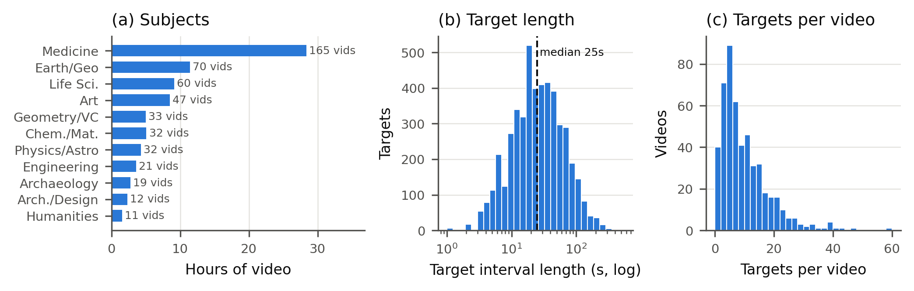

Educational videos teach through what they show — a radiograph, a specimen, a map, a painting — explained as the video unfolds. A person studying such a video pauses when something is shown, rewinds to where its explanation began, and keeps the few moments worth returning to. We ask whether multimodal agents can do the same. We define active, evidence-grounded visual knowledge collection: an agent operates a real video player and collects knowledge moments — intervals of a video, each kept with a clean frame of what it shows and the subtitles that explain it. Our agent goes from a topic to such moments: it searches, chooses videos, and on each video pauses, rewinds, and keeps, with one vision–language model making every judgment about content. We build a benchmark of 502 videos from 11 subjects in which annotators kept the moments they found worth keeping, and compare eight open backbones against these references. The best agent keeps a frame inside 77% of the moments people kept, the weakest 42%; agents had seen almost all the moments they missed and lost them afterwards, in judging, verifying, or picking the frame.
Pause, rewind, keep
One vision–language model judges the content; deterministic tools do the browsing. Every step runs on the live player — no downloaded video, no transcript API.
Skim
Sweep the timeline forward, jumping further while nothing on screen changes.
Pause
Stop on a frame worth keeping, or on a new visual the triage finds worth a look.
Rewind
Look back and bisect to where the visual begins, then record until it changes.
Keep
Pick the most informative frame and keep the moment only if its subtitles explain it.
Eight backbones, one video
Pick a video and watch every backbone navigate it. Each lane replays the agent's real playhead; hover a dot to see the moment it kept.
A labeler that records how people watch
Annotators use the same player actions as the agent. Every skim, look-back and inspection is logged, so the benchmark captures both what people select and how they found it.
Skim & inspect
Jump ahead in fixed steps, then record whether the new visual is worth a closer look.
Moment intervals
Mark start and end, choose a representative frame, and judge whether the subtitles explain it.
Full trajectory log
Play, pause, seeks and decisions are timestamped and editable, giving a human reference for agent behavior.
Shared, conflict-free
Several annotators work on one label file; each video is saved independently.
502 videos, 11 subjects
Human annotators watched every video with the same player controls and kept the moments they found worth returning to.

How many knowledge moments does each backbone find?


Kept moments
Knowledge moments kept by the agents, each with the verifier's rationale. Click a card to open it.
@inproceedings{anonymous2027pause,
title = {Pause, Rewind, Keep: Agents That Collect Knowledge Moments from Videos},
author = {Anonymous},
booktitle = {Under review},
year = {2027}
}